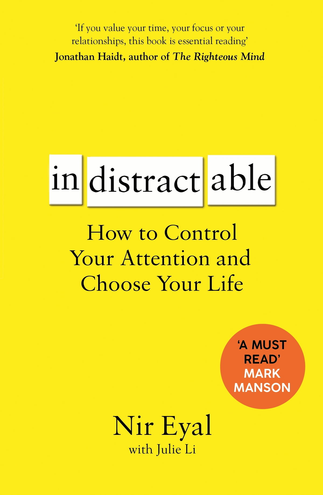

Productivity (distraction)
How can I fight distraction temptation and procrastination?
Neu-Ulm University of Applied Sciences
August 3, 2022
Prologue
Living the life we want not only requires doing the right things, but also neccessitates not doing the things we know we’ll regret Nir Eyal, american author
Foundation

This unit is inspired by and based on the book Indistractable by Eyal (2019)
Nir understands distraction down to its DNA—its neurology, its psychology, its emotions—and the framework he lays out in Indistractable teaches the reader how to attack the problem of each of its levels and take control of the reins of their mind. Tim Urban, writer and illustrator
Introduction
Indistractable
Procrastination
= be honest with yourself
Being indistractable means striving to do what you say you will do. Indistractable people are as honest with themselves as they are with others. Eyal (2019, 15)
Problem statement
The world is more distracting than ever
Things we reach for
!= important things
Traction and distraction


Exercise
Take 10 minutes to reflect yesterday and write down …
- one thing you did that moved you closer to what you really wanted
and the benefit you received from that action; and - one thing you did that moved you away from what you really wanted
and the foregone benefit of taking that action.
Share your findings with your neighbor.
The indistractable model
Internal triggers
the pain of wanting
Even when we think we’re seeking pleasure, we’re actually driven by the desire to free ourselves from the pain of wanting. Eyal (2019, 15)
What motivates us
We are motivated by pleasure.
But what is pleasure? Pleasure means not profligate pleasures, but absence of bodily pain and mental tarachai or troubles (Greek philosopher Epicurus according to Annas 1987, 3)
All motivation is a desire to escape discomfort. If a behavior was previously effective at providing relief, we’re likely to continue using it as a tool to escape discomfort.
What prevents discomfort can be addictive, but that doesn’t make it irresistible. If you know the drivers of your behavior, you can take steps to manage them.
Exercise
Take 10 minutes to identify four things you tend to get distracted while doing.
Describe what you did to distract yourself.
Write down root causes of discomfort you may be trying to escape by doing the unwanted behavior.
Discuss your findings with your neighbor.
Satisfaction
I can’t get no satisfaction
’Cause I try, and I try, and I try, and I try Rolling stones
Why not?
Boredom, negativity bias, rumination & hedonic adaptation
Pain management
Gearing towards traction is pain management. Distractions cost us time, and like all actions, they are spurred by the desire to escape discomfort.
Four psychological factors make satisfaction temporary. Our tendencies toward boredom, negativity bias, rumination, and hedonic aadaptations conspire to make sure we’re never satisfied for long.
Feeling bad isn’t actually bad; it’s exactly what survival of the fittest intended. It is an innate power that can be channeled to help us make things better.
If we want to master distraction,
we must learn to deal with discomfort. Eyal (2019, 33)
Dealing with internal triggers
Don’t ignore the trigger, because mental abstinence can backfire.
Resisting an urge can lead to rumination and increase cravings, ultimately leading to undesirable behaviors.
Reimagine the trigger
Notice the urge and ride it like a surfer riding a wave, instead of giving in.
Reimagine the task
Use fun and play in dreary task to keep you focused.
Exercise
Describe one frequent task you have to do that you see as boring.
What can you do to reimagine the task to make it feel more like play?
What small challenges, constraints, or novelty can you add to make it fun?
Reimagine your temperament
I run out of willpower. You can do it if you really want (and tell yourself).
Traction
Time planning
If you don’t plan our time, someone else will help to waste it. Ziglar (2021, 52)
Turn values into time
Be aware of your values, i.e., know why you do what you do.
Exercise
Values are not end goals; they are guidelines for our actions.
What three to five values are most important to you?
What activities reflect these values?
How much time would you set aside each week for these activities?
Schedule relationships
You and the people you love deserve more than getting the time you have left.
Sync at work
Without visibility into how you spend your time, colleagues and managers are more likely to distract you with superfluous tasks. Eyal (2019, 87)
External triggers
Problem
Today much of our struggle with distraction is a struggle with external triggers. Eyal (2019, 94)
Effects
Tech devices often gain unauthorized access to our brains by exploiting a vulnerability.
Uncomfortable feeling
+ easy action to perform
+ trigger
= waste of time
Review the trigger
Is the trigger serving me, or am I serving it?
Use the former, hack back the latter.
Exercise
What external triggers have you noticed during the last 30 minutes?
Have they changed your behavior? Why (not)?
Has the trigger served you living up to your values?
Interruptions
Interruptions lead to errors—so eliminate them and don’t let your brain drain.
Hack back strategies
Some strategies to hack back common work-related distractions
- To get fewer emails, send fewer emails (e.g., respond not immediately but at a scheduled time).
- Group chat
- Use it like a sauna and get in and out at scheduled time, only involve who is necessary.
- Meetings
- Make it harder to call a meeting, no agenda, no meeting. Use the meeting for consensus not for problem-solving, be fully present and leave devices outside except for one laptop.
- Apps
- Use distracting apps on your desktop rather than on your phone, organize apps and manage notifications.
- Browsing
- Save articles, read or listen at a scheduled time and use apps to makes consumption less distracting.
Distraction
Self-control
Being indistractable not only requires keeping distraction out, it also necessitates reining ourselves in. Eyal (2019, 159)
Precommitments
Removing a future choice in order to overcome our impulsiveness
Exercise
Recall a precommitment you made that successfully helped you to become what you want to be.
Why do you think this precommitment worked for you?
Effort and price pacts
Make unwanted behavior more difficult to perform or add a cost to getting distracted.
Identity pacts
An identity pact is a precommitment to a self-image.
Become a noun,
share it with others
& adopt rituals
Challenges
You want to learn how to control your attention and chose your life, in short to became indistractable? Here are three challenges that might help you along the way.
- Level 1: Observe yourself over the next few weeks, note when you have been distracted, analyze the cause, and consider how you might become less distracted. You might use the distraction tracker.
- Level 2: Take three weeks and consequently timebox your day in all life domains (e.g., you, relationships, work). Reflect an refine your schedule regularly, but commit to it, once it’s set.
- Level 3: Engage with the people in your work context(s) (university, job), share the findings and strategies outlined here, discuss how you could apply the strategies to positively influence company culture and create an indistractable workplace, apply what you have agreed on and reflect the outcomes.
Reading list
For digging deeper, I recommend starting with following articles:
- Fogg behavior model: Fogg (2009)
- Implementation intention: Gollwitzer (1999)
- Negativity bias: Vaish, Grossmann, and Woodward (2008)
- Precommitments: Kurth-Nelson and Redish (2012)
- Rituals: Tian et al. (2018)
- Rumination: Treynor, Gonzalez, and Nolen-Hoeksema (2003)
- Urge surfing Ostafin and Marlatt (2008)
- Self-determination theory: Deci, Olafsen, and Ryan (2017)
- Willpower: Job et al. (2015)
Q&A
Literature
Footnotes
Liminal moments are distraction traps that transition us from one thing to another, like picking up our phone while waiting for a traffic light to change.
There are several tutorials available on how to use a calendaring tool for timeboxing, see e.g., (How to Block Time on Google Calendar)[https://www.makeuseof.com/tag/block-time-google-calendar/].